Figure out which children are quietly falling behind.
Most schools measure learning through academic scores. Tilli looks at every child beyond academics, measuring
data points per child every year, within just 40 minutes.


We bring together every single data point about a child into a developmental profile that follows the child from kindergarten through Grade 12.
Coming nextThis cognitive profile joins every other data source about the child, from academics to attendance.
 Built on the child's data
Built on the child's data Evidence-based
Evidence-based Zero teacher prep
Zero teacher prepTilli designs reports parents love to receive.
In every report Strengths + Growth areas + Home intervention plan
See a sample report →Every data point comes from the 3 people who know the child best.
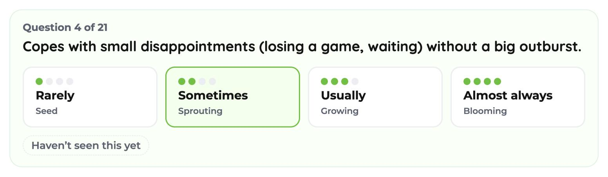

Get a 360° view of each student.
12 foundational skills that usually go unmeasured, paired with every single data point, from math to attendance.
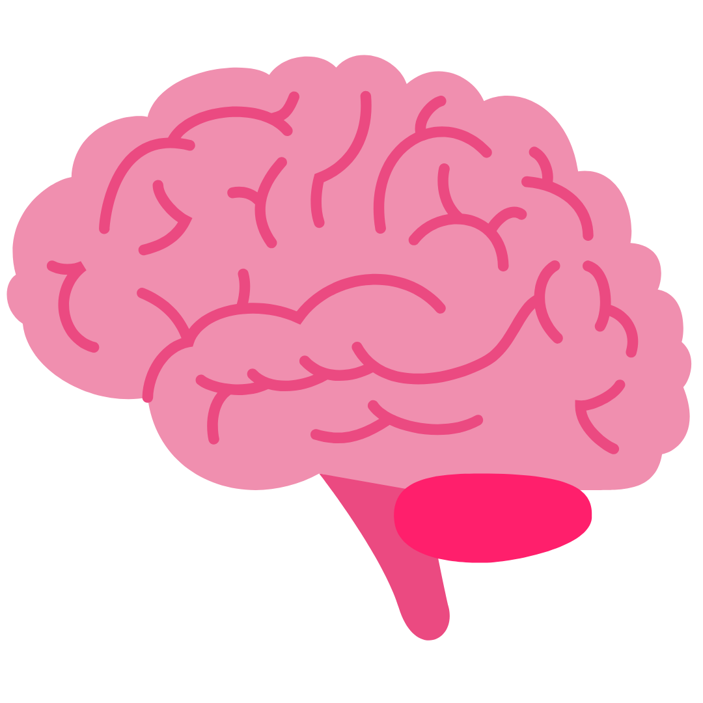
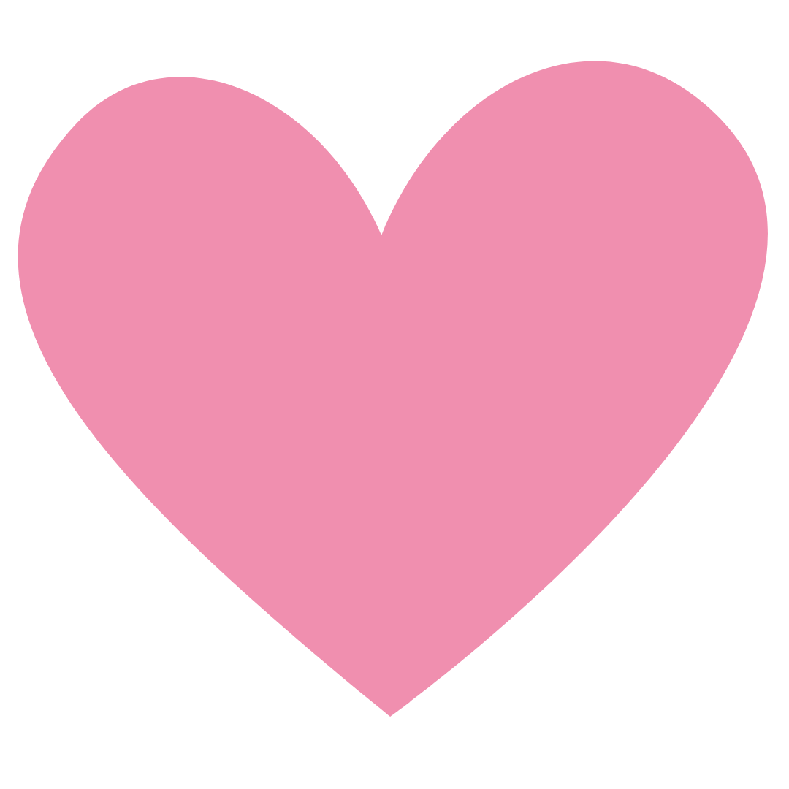
One learning passport for every child.
Tilli’s skills data, joined with everything your school already records.
AttendanceMaths & literacy scoresWeekly assessmentsBehaviour notesPortfolio
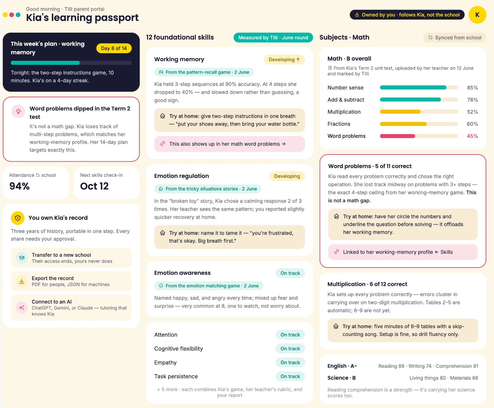
Kia’s learning passport
Per child. Owned by the family. Follows them to the next grade and the next school.
Marks, explained
45% on word problems isn’t a math gap. She loses track after 3 steps, which is working memory.
Every skill, with its evidence
Each level shows where it came from: her game, her teacher, and home.
Tonight’s plan, built from her data
A 14-day plan targets the one skill holding her back, with a 10-minute activity tonight.
Know, term by term, whether every child is on track for middle school.
See where each child stands, how far they've moved since last term, and what to do next.
A generic AI prompt gives you a generic lesson plan. Only Tilli knows your student.
The same question, asked two ways. One answer is for any average child. AskTilli is for your child.
Ask Tilli anything about your school.
Sunrise Academy · 6 grades, Pre-K to Grade 5 · 35 students a class
Sunrise Academy is a demo school created for this interaction. These answers are illustrative sample data, not a real school.
Tilli doesn't replace your counsellor. It tells them which children to see first.
Your Life Skills period now has a structured 36-week plan.
Your social-emotional curriculum is now a personalized, data-driven plan.
Your counsellor gets early signals, not end-of-term referrals.
53 schools
across the world are now measuring foundational skills that matter.


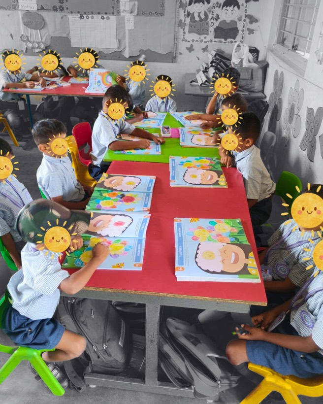
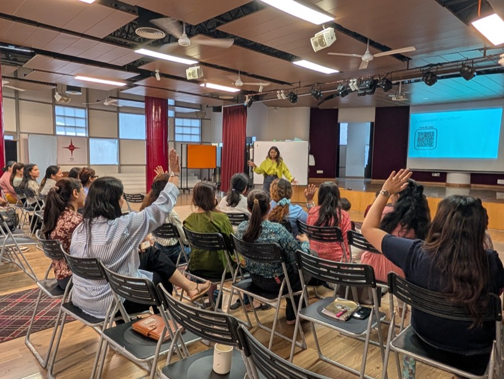
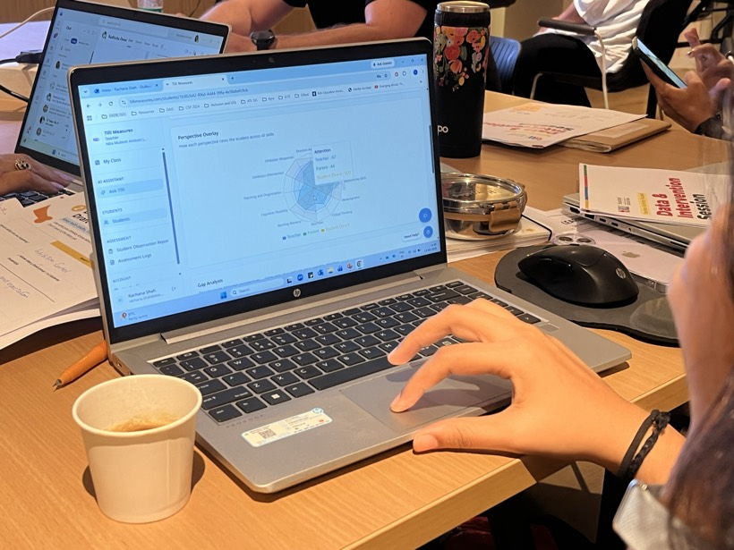
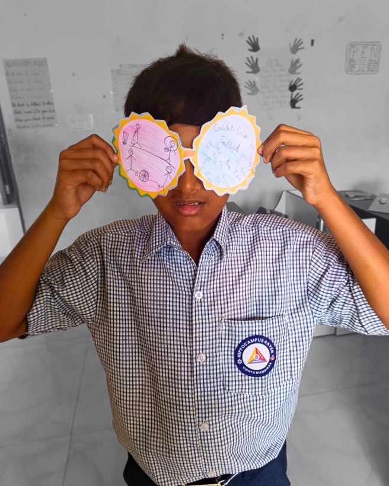
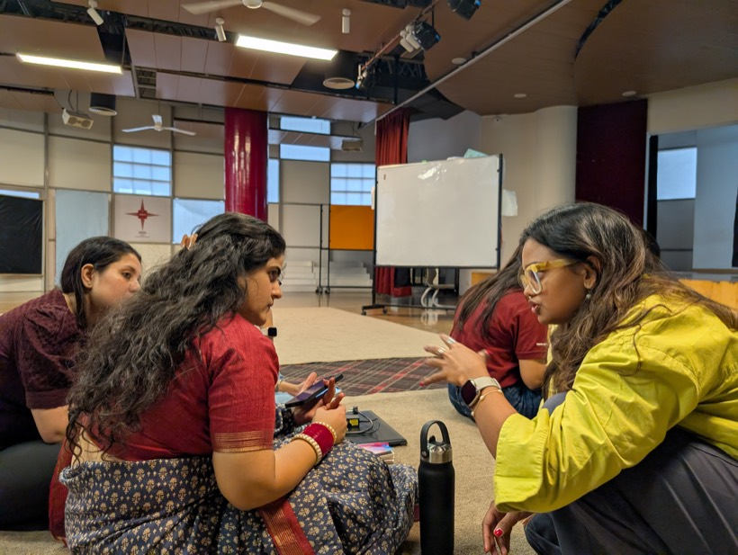
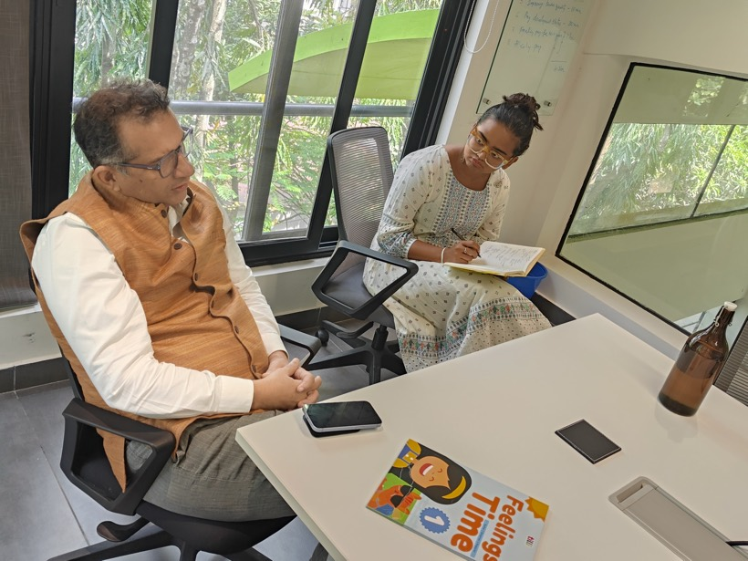
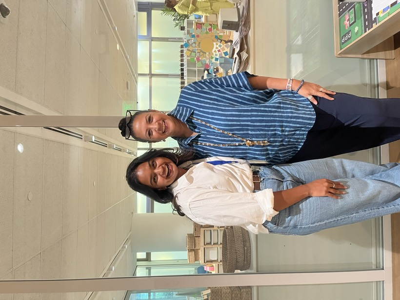
assessed
trained
Research-Practice Partnership with Stanford & NMAJS“What makes this work so powerful is the way it brings research, data and classroom practice together, turning evidence into insights that can genuinely support teachers and children.
What a year with Tilli looks like
In the first weeks, every child is assessed across all 12 skills: teacher observation, parent report, and direct tasks. We repeat it three times a year, so growth shows up in the data instead of being guessed at.
Teachers ask about a child or a class and get lesson plans, behaviour guidance, and that child's own data, in the middle of a school day, in seconds.
36 weeks of play-based lessons for every class: Feelings Time workbooks, Teacher's Guidebooks, and the Teaching Kit. 30 minutes a week. No new period, no extra prep.


Start with one grade, one year.
Your data, your pace. In 30 minutes with our founding team, we'll fit Tilli to your timetable, your section sizes and your budget.